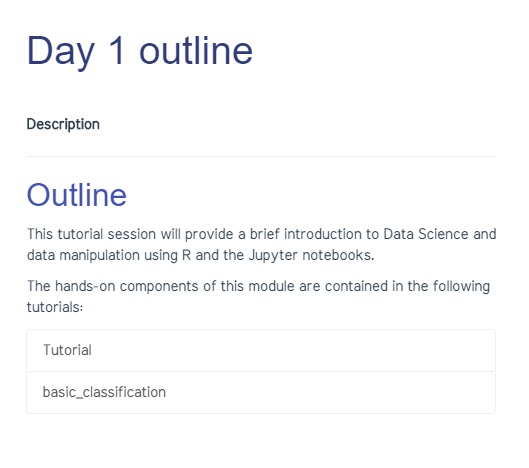

📃 Adding content to your site
✨ Understanding Layouts
One of the fundamental elements of Jekyll is the ability to utilize different layouts for different types of pages. The layouts are found in the _layouts folder. These are .html files that drive the layout of any particular page. For example the 'slide' layout contains all of the necessary includes to power Reveal.js slides. The current available layouts in Modules template are:
- landing- This layout is the layout for the homepage of your website. It
- page - This layout is used for any individual page, like the 'About Me' page. It is a blank page that can be formatted using Markdown.
- slides_index - This layout is used for reveal.js presentations. It includes a few more functionalities than the 'page' layout.
- slide - This layout is used for creating a Reveal.js slide deck.
- notebook - This layout is optimised to include Jupyter notebooks in your site.
✨ Generating the pages for the lecture modules or projects
You will have noticed by now that this template displays cards in the landing page, which correspond to the various modules or sessions in your course.
Each these modules or sessions should be declared as a collection in the _config.yml file so that Jekyll knows where to read e.g.
collections:
- module1
output: true
- module2
output: true
(leaving the output as true ensures the generation of an html page for each of the files contained in the directory)
You will then need to generate a folder for each module (using the exact same name you used in the configuration file) adding an underscore to the folder's name e.g. _module1
Finally, you need to make sure there is a.md file that will serve as the front page to the module / collection. The easiest way to get this done is by copying the base_module.md file in the _posts folder.
The mandatory fields for the front matter are (examples are provided in the template inside the collections _Day1and _Day2):
layout: module
title: Day 1 outline
description: This is the description for the module
Your modules will be automatically added to the landing page in the form of a card as well as to the main navigation menu on the website.
You can then start populating these with other .md files or jupyter notebooks. The urls and redirects to the files within the collection folders are generated automatically and added to the front page of each module/project.

Any additional pages (e.g. about, code of conduct, profile, resources) must be created and saved in the _pages directory.
Once this is done the pages will be automatically added to the sidebar menu.
✨ Adding Reveal.js Presentations
In Modules templates presentations are actually set up as posts, and live in the same _posts folder as your blog posts. They also must use the same file naming convention as posts (yyyy-mm-dd-title.md). The main difference between a blog post and a Reveal.js presentation is the layout and category used in the YAML front matter.
Reveal.js is integrated so that you can generate your slides using .md files. To get started you need to add this YAML front matter at the beginning of your file:
---
layout: slide
title: Add Your Title Here
excerpt: "Add an excerpt here, the excerpt will appear underneath the blog title"
modified: 2016-01-13 20:41:38
tags: [intro, beginner, jekyll, tutorial]
comments: true
category: presentation
theme: simple
---
<section data-markdown>
# Add Reveal.js slide content here, following the Reveal.js format
# Each <section> corresponds to a slide in the presentation deck
</section>
You can choose any of the default Reveal.js themes in the YAML front matter (e.g. theme: simple), othwerwise, the default theme will be the black theme.
Note that Reveal.js presentations must use slide as the layout and presentation as the category.
✨ Adding Links to External Presentations
If you would rather use another service, like Google Presentations for your presentations you can still link to them from your Modules template website. To do so start a new file in your _posts directory following the same yyyy-mm-dd-title.md file name convention and paste the following YAML front matter into that file.
---
layout: default
title: Add Your Title Here
excerpt: "Add an excerpt here, the excerpt will appear underneath the blog title"
modified: 2016-01-13 20:41:38
tags: [intro, beginner, jekyll, tutorial]
category: presentation
---
# Title of Presentation
## SubTitle of Presentation
[Text for Link](html link to presentation)
In the above example you are using the default layout, but giving it a presentation category. This means it will give you a blank post page, but will appear under your list of presentations. The content on this page can be anything, but you will need to at least add a link to wherever your presentation is located.